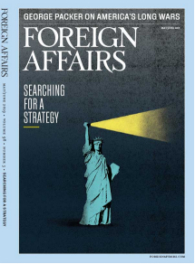

收录于合集
作品简介
【作者】
迈克尔·欧汉龙（Michael O’Hanlon）是美国军事战略专家，布鲁金斯学会外交政策项目的高级研究员， The Senkaku Paradox: Risking Great Power War Over Small Stakes （布鲁金斯学会出版社，2019年）一书的作者，本文正是以该书内容为基础改编的。
【编译】 缪高意（国政学人编译员，中国社会科学院大学）
【校对】 胡贺 赵炜婷 徐枫潇 王国欣
【审读】 丁伟航
【排版】 贺奕
【来源】
Michael O’Hanlon, “Can America Still Protect Its Allies？How to Make Deterrence Work” Foreign Affairs , Vol.98, Issue.5, 2019, pp.193-202.
期刊介绍

《外交事务》（Foreign Affairs），由美国外交关系委员会(Council on Foreign Affairs)出版，成立于1922年。根据2018年的期刊引文报告,该期刊的影响因子为4.390，在“国际关系”类别的91种期刊中排名第3。
迈克尔·欧汉龙（Michael O’Hanlon）
内容提要
二战结束以来，美国的战略思维一直以威慑理论为主导。 简单来说，“威慑”（deterrence）是指一个国家利用威胁使他国相信采取侵略邻国等行动的代价将会超过其所获收益的能力。然而对于华盛顿来说，威慑绝不仅仅是为了保护美国本土。美国在建立战后同盟体系的同时，也制定了“延伸威慑”(“extended deterrence”)的战略。根据这一战略，美国将利用包括核武器库在内的军事力量，保卫其条约盟友，其中包括日本、韩国和北约成员国。问题的关键不仅在于对抗苏联在亚洲和欧洲的冒险主义，而且在于安抚美国的盟友。比如，如果德国和日本知道华盛顿会保障他们的安全，他们就不需要采取制造核弹等破坏国际体系稳定的行动了。
如今，苏联的威胁已经消失，但延伸威慑的战略仍然是美国全球权力的核心。 至少在名义上，华盛顿仍然致力于使用军事力量（如果有必要，甚至是核力量）来保护其盟友免受竞争对手的侵略。美国驻扎在国外的军事力量进一步证明了这一承诺，因为对主要盟国的任何攻击都可能造成美军的伤亡，这几乎保证了美国的军事反应。华盛顿的两个主要地缘政治对手是中国和俄罗斯。中国开始挑战美国经济和技术霸权的新兴大国，普京总统领导下的俄罗斯则越来越致力于破坏美国主导的世界秩序。奥巴马和特朗普政府的高级国防官员意识到北京和莫斯科构成的威胁，并强调，华盛顿需要维持甚至加强传统的威慑战略。然而问题是，这一战略能否可靠地解决美国在21世纪可能面临的各种问题。自2016年唐纳德·特朗普当选总统以来，人们对美国信誉的疑虑加剧。特朗普曾公开质疑美国联盟的价值并诋毁主要盟友，有时甚至直接挑战延伸威慑的逻辑。
然而，无论有没有特朗普，当代美国的安全问题都不能仅靠传统的军事威慑来解决。 华盛顿必须向盟国承诺，它既愿意也有能力履行其条约义务。但更重要的是，鉴于中国和俄罗斯等竞争对手构成的威胁性质不断变化，美国必须丰富其威慑手段。具体言之，美国决策者应制定将军事因素与经济制裁和其他形式的非军事惩罚结合起来的战略。这样的战略使对手相信，即使在中国和俄罗斯拥有更强大的武器面前且显示出更大的使用意愿的时代，美国仍将继续执行其威慑战略，降低灾难战争的风险。
文章导读
一、患难之友
再保证很难实现。事实上，在威斯特伐利亚体系里，这是完全不自然的。说服一个国家将本国的安全，甚至生存都依赖另一个国家，这与直觉、常识和人类历史背道而驰。再保证是困难的，因为保护盟国的承诺不是无条件的。美国的盟友不认为华盛顿帮助他们摆脱困境时，自己将是毫无顾忌的。正如特朗普在批评北约成员国的军费开支时所指出的那样，无条件的保证会鼓励盟友搭便车，他们可能会认为美国将永远为集体防御买单。
然而不知何故，特朗普的话语迄今为止几乎没有造成永久伤害。美国主导的世界秩序也没有崩溃。 美国的盟友可能会感到紧张，但他们并没有惊慌失措，也没有从根本上改变自己国家的安全战略。 此外，尽管特朗普言辞激烈，但他在政府中配备了致力于美军驻外的人物。在特朗普执政期间，美国国防预算持续增长，总统还要求国会提供额外资金用于发展先进武器。 在这些方面，与直觉相反的是，从小布什到奥巴马再到特朗普的过渡，显示出更多的是连续性，而非变革。
威慑和再保证都是一门艺术：它们需要持续的关注，因为旁观者将一切看在眼中。除了避免反复无常的威胁退出同盟之外，美国不需要大幅增加驻外作战力量以使其军事承诺更加可信。然而，最可取的政策变革不在于国防部的规划，而在于 整合经济和军事工具，以发展更新的、更现实的威慑。
二、 新型威慑 ****
敌人的有限攻击会给美国政策制定者提出一个难题，作者称之为“尖阁悖论”（the Senkaku paradox）。 华盛顿是否应该在一些相对不那么重要的事情上，为保持信誉，冒着大国冲突和潜在核冲突的风险？或者得出这样的结论：赌注太小，不足以证明这种风险是值当的？如果敌人对一个本来毫无价值的目标进行有限的侵略，延伸威慑的传统方法，即美国的大规模反应似乎是极不相称的。另一方面，不反应也是不可接受的，因为这不符合美国的条约义务。
至于如何解释这一悖论，作者提出 不对称防御战略 （a strategy of asymmetric defense）。美国不应真正放弃对其盟国的非常有限（而且很可能是非致命的）侵略而作出全面军事反应的潜在可能性。然而，作为一个实际问题，无论是在危机开始之前还是之后，美国都需要其他选择。最重要的是，华盛顿的威慑战略应尽可能避免与另一大国进行抗争、出现流血的战争。应对小规模侵略，美国应重视经济战争，特别是经济制裁的作用。首先，美国军事力量的主要作用应该是创造一个防御环境，这样中国或俄罗斯的扩张欲望就不会进一步增强。在危机恶化的情况下，华盛顿及其盟国可以尝试采取间接军事措施。但是，在军事力量予以支持的同时，经济战争应该是威慑战略的核心。这样的做法将有助于使潜在的对手相信，相较于从使用武力中获得的利益，它将失去更多，尤其是如果美国及其盟国采取了适当的准备措施以确保他们能够容忍任何报复的时候。这一战略的诀窍是确保对不服从行为的惩罚与最初的侵略行为相称，同时在必要时保持惩罚的潜在性。为了使制裁在经济上是可持续的，美国及其盟国需要了解自身供应链、金融交易和其他经济关系中的脆弱性。他们应该制定策略来缓解这些脆弱性。例如加强关键矿产和金属的储备，因为许多矿产和金属目前主要来自中国。
以制裁为基础的战略是明智的，但却并不是软弱的。 事实上，一旦美国及其盟国部署了制裁措施，如果北京或莫斯科拒绝让步或以其他方式解决争端，华盛顿会提高赌注。倘若意识到侵略国的战略目标已经变得非常不值得信任或充满敌意时，华盛顿不仅可以针对侵略国的具体行动，而且限制其未来的经济增长。随着时间的推移，出口管制和永久制裁可能取代临时惩罚措施。这一战略需要美国主要盟国的支持才能生效——这也是为什么华盛顿需要以明智、耐心和非升格的方式应对此类危机，以加强其联盟，而不是吓跑其主要伙伴的另一个原因。
三、维护和平
即使在特朗普时代，美国的威慑战略也没有显著退化。最困难的情况出现在所谓的冲突灰色地带，在那里，经典的实战威慑作用甚微。我们尽可能从外部推断，发现美国的战争计划仍过于专注在经典的威慑概念，但是，必须意识到核武器大国之间的大规模战争是最终的，极端的手段；而且就整个世界来说，美国可能将威胁过度升格了。 只有意识到并制定出多方面的治国策略，而不是仅仅使用军事力量实施威慑战略，才能使美国从容应对大国竞争的挑战并保证其联盟的坚定性和安心状态。
**_本文由国政学人独家编译推荐_**
扫下方二维码查看往期精彩
【新刊速递】第01期 | Review of International Studies Vol.45, No.4, 2019
【新刊速递】第02期 | International Relations Vol.33, No.3, 2019
【新刊速递】第03期 | International Organization Vol.73, No.3, 2019
【新刊速递】第04期 | World Politics, Vol.71, No.4, 2019
【新刊速递】第05期 | European Journal of International Relations
【新刊速递】第06期 | Security Studies, Vol.28, No.4, 2019
分类导览 1
分类导览 2
点“在看”给我一朵小黄花